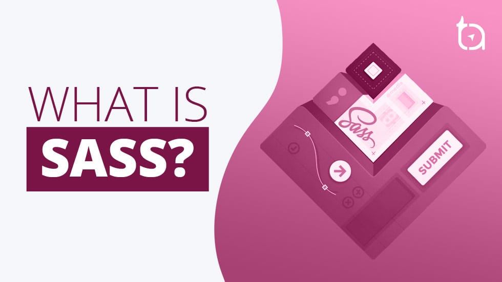
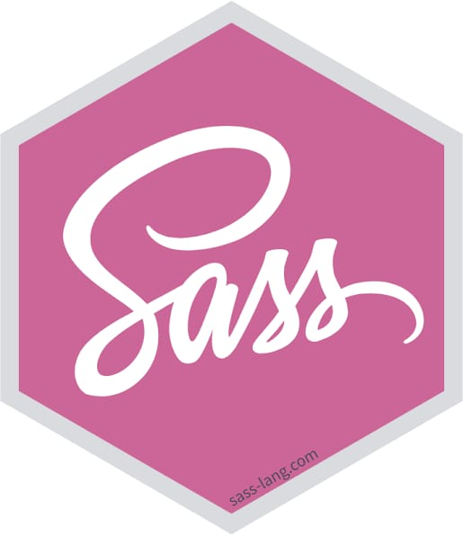
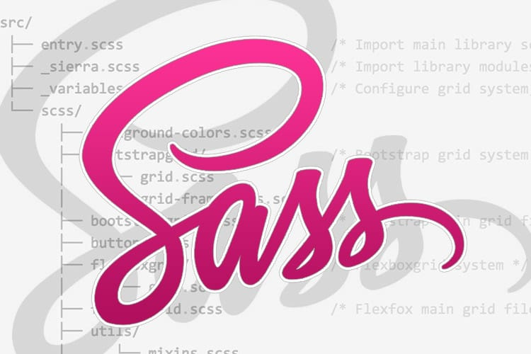

Job whit simple decing SASS

SASS is a preprocessor for CSS that allows you to use variables, nested rules, mixins, functions, and more.

SASS use variables

Maybe is ideal for big proyects or small